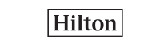

Welcome to Level 1 team which provides resolution on issues raised via call, chat and self-service (web).Analysts refer to AKN and if needed take control of users machine through SCCM and tries to resolve the query. If the issue is not resolved assignment is done to other resolver group like Level 2, Level 3, Level 4 and Vendor team.
